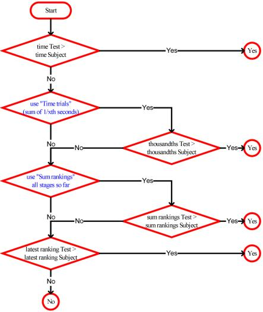

Here the test is described that is done when the competitor Subject is compared to the competitor Test. This test is part of the uniformed sorting process.
The test is described using a flow chart diagram. Flow charts are common tools in engineering and are very appropriate to formally describe a sequence of actions and conditions.
The test basically answers the question "insert here?" and answers it with a Yes or No (in the circles).
Within the test, decisions are made (in the diamonds), either:

The diagram lays out that draws (ex equos) in general individual classifications are resolved by looking at:
The initial sort order is the sum of the times in all half stage classifications.
* indicates dependence on a ranking setting
Latest or all always refers to only the half stages that have come by, up to and including the half stage for which the sorting is currently done.